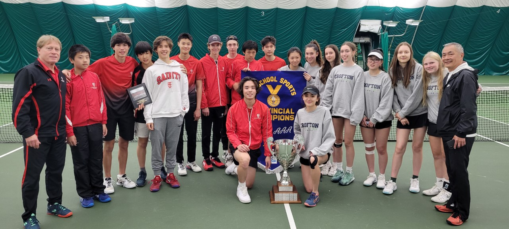
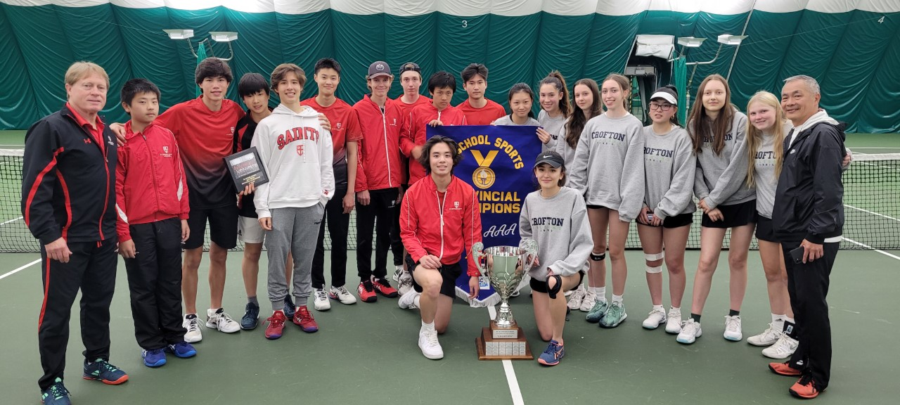

.svg)
2022 Provincial Champions
St Georges/Crofton House


St Georges/Crofton House

A Message from Jordan Abney
Congratulations on qualifying for the BC School Sports Provincial Championship! Qualifying itself, is a wonderful accomplishment, and is something that very few student-athletes get to experience! With over 450 member schools, and over 70,000 student-athletes, you have earned the privilege to represent your community and your school and fight for a provincial title.
I encourage all participants to recognize the time spent by their coaches, both teachers and community volunteers, for the time they give to support the pursuit of your dreams and goals. BC School Sports has over 8000 coaches around the province that give up countless hours to make school sport a reality. Do not let this weekend pass by without thanking your coaches for all they have done for you and your team.
Thank you to all those who make this championship possible; Championship Host Committees, sponsors and event volunteers. So much goes into hosting a BCSS Provincial Championship and without their efforts, none of this would happen. Thank a volunteer this weekend for all they do.
BC School Sports believes interscholastic athletics are an extension of the classroom. The lessons learned through sport, provide the foundation for good leaders of the future. School sport fosters sportsmanship, builds character and establishes healthy active living habits that will last long into adulthood.
Athletes, I sincerely wish you the very best throughout the championship. Remember to represent yourself, your school and community well and display respect for your opponent and officials. I hope this championship provides to each you amazing athletic feats, tremendous competition, and memories to last a lifetime.
Yours in Sport,
Jordan Abney
Executive Director
BC School Sports
A Message from Rick Thieseen
Welcome to the 2022 BCSS AAA Provincial Tennis Championship. If you are like me, it has been a very long wait to have a provincial tournament again.
I want to thank you for your commitment to stick with it during a most challenging time. School sports, and the athletes involved, have taken a huge hit during COVID19 but you and your teammates have persevered. So have your coaches, many of whom have been coaching for many years, and they are also happy to be back at it.
If nothing else, the past 20 months have shown all of us the importance of school sport. Your teams are at the pinnacle for this sport but, for many hundreds of other teams, just having a season this fall was a treasure. Take some time over the next few days to recognize how significant it is for you to be competing at the provincials and how the memories created this weekend will last a lifetime.
Enjoy the moment and do you best to represent your family, your team, your school, and your community with courage and joy.
Good luck to all teams competing.
On behalf of the BCSS Board of Directors,
Rick Thiessen
President

For restringing and all your tennis needs please see our sponsor
Courtside Sports
1136 Hillside Avenue
(250) 386-4263